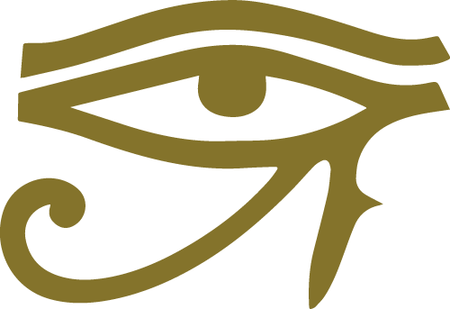

Why? Existentialism.
Destinul individual ca o realitate interioară, iraţională şi imanentă nu se revelează decât în durere,
că este singurul drum pozitiv de înţelegere lăuntrică a problemelor personale.
Emil Cioran
Emil Cioran (8 April 1911 - 20 June 1995) was a Romanian philosopher, aphorist and essayist,
who published works in both Romanian and French. His work has been noted for its pervasive
philosophical pessimism, style, and aphorisms. His works frequently engaged with issues
of suffering, decay, and nihilism. In 1937, Cioran moved to the Latin Quarter of Paris,
which became his permanent residence, wherein he lived in seclusion with his partner,
Simone Boué, until his death in 1995.
Books
- Précis de décomposition ("A Short History of Decay"), Gallimard 1949
- Syllogismes de l'amertume (tr. "All Gall Is Divided"), Gallimard 1952
- La Tentation d'exister ("The Temptation to Exist"), Gallimard 1956

Staring
at
meaning
?
Concepts to work with
| # |
! |
| Existence precedes essence |
Individuals shape themselves by existing and cannot be perceived through preconceived and a priori categories, an "essence". |
| The absurd |
There is no meaning in the world beyond what meaning we give it. |
 |
As a teenager in the 1920s, Sartre became attracted to philosophy upon reading Henri Bergson's essay Time and Free Will: An Essay on the Immediate Data of Consciousness. |
 |
The figure of Socrates, whom Kierkegaard encountered in Plato's dialogues, would prove to be a phenomenal influence on the philosopher's later interest in irony, as well as his frequent deployment of indirect communication. |
Enemies of the void
| Inquiry |
Level |
| Positivism |
😡😡😡ğŸ¤ğŸ¤ |
| Rationalism |
🤡🤡🥶🤥🤥 |
| Religion |
😵😵🤬😍😍 |
| Nihilism |
☠️😇💩💩🍆 |
Soulmate seeker
Abyss sneak peek
